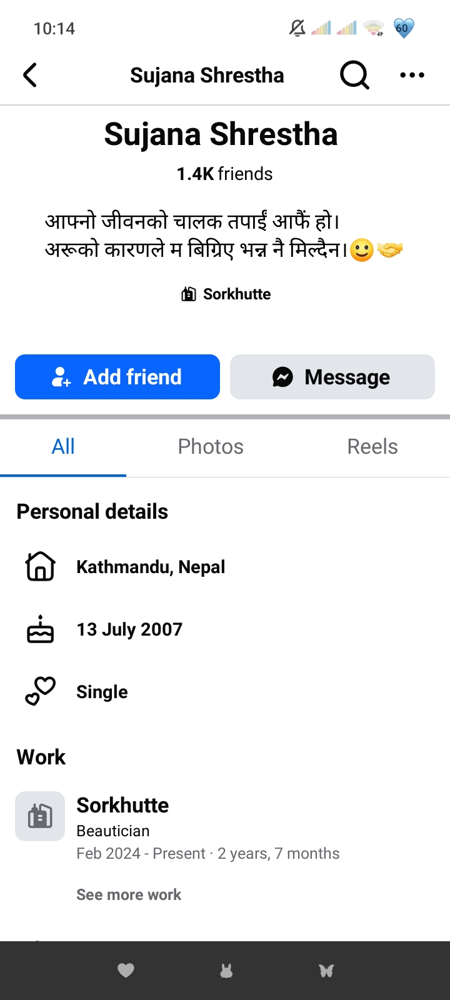

यदि तिमीले त्यो पुरानो कुराहरू पढेको छैनौ भने, home page B Side को भन्दा ठिक तल आर्को फोल्डरमा छ, पढ्नु! त्यसमा पनि केही महत्त्वपूर्ण कुराहरू थिए। आज म दुइटा महत्त्वपूर्ण कुराको बारेमा कुरा गर्न आएको छु।
१. दशैँको शुभकामनापहिलो महत्त्वपूर्ण कुरा भनेको दशैँको शुभकामना। तिमीले चाहेको हर कुरा पूरा होस्। तिम्रो खुसी, तिम्रो सफलता र तिम्रो मुस्कानले तिम्रो साथ कदापि नछाडोस्। म जमिनमा भएपनि म तिमीलाई सफलताको शिखरमा हेर्न चाहन्छु, र मेरो यो सपना सधैँ पूरा होस्! अनि म त अब तिम्रो profile Stalk गर्दिन तर मिल्छ भने दशैंको दुई चारवटा फोटो पठाइदेउ है।
२. केही मनका कुराहरूदोस्रो कुरा भनेको— सायद यो कुरा गर्न जरुरी त थिएन, किनकि मैले तिमीलाई Stalk नगरेको केही दिन मात्र भएको छ र थाहा छैन मभित्र अजीब किसिमको बेचैनी (तलतल) भइरहेको छ। तर पनि जब तिमीलाई मैले Stalk गर्थे, तब मैले एउटा कुरो notice गरेको थिएँ।

तिम्रो Facebook about info मा relationship single थियो। यो कुरा धेरै नै नर्मल छ तिम्रो नजरबाट हेर्दा, र तिमीभन्दा उमेरमा म धेरै ठूलो पनि त छैन। तर यो दुनियाँलाई मैले धेरै राम्रोसँग चिनेको छु, त्यसैले भन्न चाहन्छु— कि त यसलाई private नै राख्नुहोला, बाँकी हजुरको मर्जी! नराम्रो लागेमा Sorry.
अधुरो पत्र र रित्तिएको मन भाग १सायद यो application मा राख्ने विचार त थिएन, तर थाहा छैन किन राखेँ। अहिले विजयादशमीको टीकाको अघिल्लो राति २:४३ बजेको छ। अर्थात् भोलि बिहान टीका हो। आँखामा निद्रा छैन, दिमागमा बस तिम्रा सम्झना र यादहरू मात्रै घुमिरहेका छन्। थाहा छैन यो message app मा update गर्छु या गर्दिनँ, अनि यो पनि थाहा छैन कि तिमीले यसलाई कहिले पढ्नेछौ।
तर यतिबेला म तिमीलाई असाध्यै धेरै याद गर्दैछु—यति याद कि त्यसलाई व्यक्त गर्न मसँग कुनै शब्द नै छैन। मोबाइलको screen मा झल्किने यी क्यान्भास फोटोहरूले पनि मनको तिर्खा मेट्न सकेका छैनन्। लाग्छ, screen को यो दुनियाँभित्र आफैँ छिरेर तिमीसमक्ष पुगूँ।
म तिमीलाई अहिले यति धेरै याद गर्दैछु—जति समुद्रमा पानीका थोपाहरू छन्, जति यो ब्रह्माण्डमा ताराहरू छन्। जब-जब म तिम्रा लागि केही लेख्न खोज्छु, मेरा शब्दहरू नै हराउँछन्। तर Suzu, तिमी सधैँ यति कुरा याद राख्नु... मैले प्रेम गरेँ या गरिनँ, त्यो त मानिसहरूले विश्वास गर्ने ती भ्रमित भगवानलाई नै थाहा होला, तर जति पनि गरेँ, केवल तिमीलाई नै गरेँ।
भाग २यसमा म गलत पनि हुन सक्छु, यदि म गलत भए मलाई माफ गर।
"Never complain, never explain stay silent & enjoy the pain."
म जब पहिले तिम्रो instagram profile खोलेर हेर्थेँ, तब सायद मैले एकपटक यो वाला पोस्ट देखेको थिएँ। तिमीलाई थाहा नै छ, म तिमीलाई आफ्नो भगवान्भन्दा पनि माथि मान्छु। म चाहन्छु दुनियाँको सारा खुसी तिम्रो कदममा होस्। तिम्रै यस्ता post हरू देख्छु, तब कसैले मुटुमा तातो छुरा चलाएको जस्तो अनुभव हुन्छ। मेरो दिमाग अनावश्यक सोच्न थाल्छ—'उनलाई पनि कसले दुःख दिन सक्छ?'
यदि यो समस्या प्रेमको हो भने प्रेम फेरि सुरु गर्न मिल्छ। जसले तिमीलाई छाडेर गयो, उसको भागमा त्यो खुसी नै थिएन होला। आफ्नो बाटो अगाडि बढाऊ, कोही जाँदैमा र कोही नहुँदैमा life मा break लाग्ने होइन। तिमी त्योभन्दा राम्रो मान्छेको हकदार छौ—You deserve better.
यही कुरा तिमीले मेरो लागि भन्लीऊ। तर हरेक सूत्र, हरेक समस्यामा प्रयोग हुँदैन। मेरो कथा भने अलि अलग्गै छ। एक बोतल पानी समुद्रमा खन्याउँदा समुद्रलाई त्यो पानी बढेको आभास पनि हुँदैन, तर बोतल भने खाली भइसकेको हुन्छ। अनि त्यो खाली बोतल कुनै पनि कामको रहँदैन। त्यस्तै हो, मभित्र जति पनि प्रेम, स्नेह, माया थियो, त्यो सबै सकिसकेको छ।
एपको डिजाइन र अपडेट बारेअनि अर्को कुरो, मैले एपको डिजाइनमा केही परिवर्तन गरेको छु। यो ठिक छ कि पहिलाकै ठिक थियो? मलाई लाग्थ्यो पहिलाको अलि भद्रगोल थियो। यसमा चाहिँ पुरानो फोल्डरहरू एकसाइड (A-Side) र पछि मैले अपडेट गरेको फोल्डरहरू अर्को साइडमा (B-Side) राखिएको छ। अबदेखि हरेक अपडेटमा यो पुरानो अपडेट मेटाएर नयाँ update गर्नेछु।
अनि अर्को कुरो, यो मलाई WhatsApp मा Yes वा No मा answer गर्नु है! म सोचिरहेको थिएँ— यो फोल्डरहरूमा धेरै मेसेज छ, तिमीलाई पढ्न गाह्रो वा अप्ठ्यारो भएको होला। त्यसैले म यसमा audio listening सुविधा जोड्ने सोचिरहेको थें। यसमा के हुन्छ भने तिमीले मेसेजहरू पढ्न मात्रै होइन, सुन्न पनि सक्छौ।
तर यसको फिक्का कुरो के छ भने, जुन 'फिल' (Feeling) हुनुपर्ने हो, त्यो अडियो सुन्दा हुँदैन; यसरी त औपचारिक रूपमा सुनेको जस्तो मात्र हुन्छ। त्यसैले राम्रो त पढ्नु नै हुन्छ। तर यदि तिमी चाहन्छौ भने म audio listening सुविधा जोड्नेछु। तर मेरो विचारमा, सन्देशहरूलाई पढ्नुको सट्टा सुन्नु भनेको 'भिडियो कलमा दशैँको टीका लगाउनु' जस्तै हो!